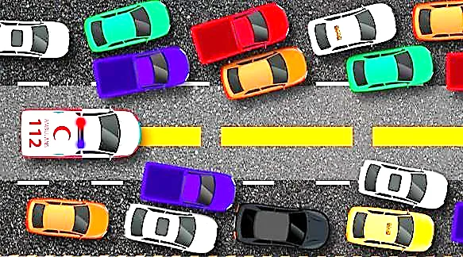

Giriş
Öncelikli kuyruğun temel işlemlerini ve kullanım alanlarını açıklamak.
Heap düzeni ve tam ikili ağaç özelliğini dizi gösterimiyle ilişkilendirmek.
Ekleme, kökü çıkarma ve öbek oluşturma adımlarını uygulamak.
İşlem maliyetlerini ve Heap Sort algoritmasını değerlendirmek.
Öncelikli Kuyruk ADT

Öncelikli Kuyruk ADT
ADT tanımında Goodrich'teki gibi min-öncelikli kuyruk (removeMin) kullanılır; heap uygulama örnekleri ise pptx'teki gibi max-heap (ekle / silMax) üzerindedir. Hangisinin seçildiği yalnızca karşılaştırma yönünü değiştirir.
Öncelikli Kuyruk ADT
Acil servise sırasıyla dört hasta geliyor (küçük sayı = daha acil):
| Geliş | 1. | 2. | 3. | 4. |
|---|---|---|---|---|
| Hasta (öncelik) | Ali (3) | Ece (1) | Can (2) | Naz (1) |
| Kuyruk (FIFO) | Ali | Ece | Can | Naz |
| Öncelikli kuyruk | Ece | Naz | Can | Ali |
Öncelikli Kuyruk ADT
Öncelikli Kuyruk ADT
| İşlem | Anlamı |
|---|---|
insert(k, v) | Ekleme: öğe, önceliğine göre yerini alır. |
removeMin() | Çıkarma: en yüksek öncelikli öğeyi çıkarır ve döndürür. |
min() | Sorgulama (peek): öğeyi döndürür, çıkarmaz. |
size() | Öğe sayısı. |
isEmpty() | Kuyruk boş mu? |
public interface PriorityQueue<K, V> { void insert(K key, V value); Entry<K, V> min(); // boşsa null Entry<K, V> removeMin(); // boşsa null int size(); boolean isEmpty(); }
Max-öncelikli kuyrukta aynı işlemler max() ve removeMax() adını alır. Bu bölümün kod örnekleri, orijinal sunumdaki gibi max-heap (ekle, silMax) kullanır.
Öncelikli Kuyruk ADT
| İşlem | Dönen değer | Kuyruğun içeriği |
|---|---|---|
insert(5, A) | { (5,A) } | |
insert(9, C) | { (5,A), (9,C) } | |
insert(3, B) | { (3,B), (5,A), (9,C) } | |
min() | (3,B) | { (3,B), (5,A), (9,C) } |
removeMin() | (3,B) | { (5,A), (9,C) } |
insert(7, D) | { (5,A), (7,D), (9,C) } | |
removeMin() | (5,A) | { (7,D), (9,C) } |
removeMin() | (7,D) | { (9,C) } |
removeMin() | (9,C) | { } |
removeMin() | null | { } boş kuyruk |
Liste ile Uygulama
insert: sona ekle → O(1)min, removeMin: tüm listeyi tara → O(n)insert: doğru yeri bul → O(n)min, removeMin: en küçük hep uçta → O(1)Liste ile Uygulama · Kodu adım adım çalıştır
removeMin()Sırasız dizi a = [5, 9, 3, 7, 4]: ekleme sona yapıldığı için en küçüğün yeri bilinmez. İlk aday: enk = 0.
k = 1: a[1] = 9 ≥ a[0] = 5 → enk değişmez.
k = 2: a[2] = 3 < a[0] = 5 → yeni en küçük, enk = 2.
k = 3: a[3] = 7 ≥ a[2] = 3 → enk değişmez.
k = 4: a[4] = 4 ≥ a[2] = 3 → enk değişmez.
k = 5 = n → tarama bitti: 4 karşılaştırma. Her removeMin tüm diziyi tarar → O(n).
min = a[2] = 3 saklanır.
Boşluğu kaydırmadan kapatmak için son öğe (4) indis 2'ye taşınır, n = 4. Sıra önemli olmadığından bu O(1).
return 3. Kalan dizi [5, 9, 4, 7] yine sırasız.
// sırasız dizi: insert(x) { a[n] = x; n++; } O(1) public int removeMin() { // n > 0 olmalı int enk = 0; // en küçüğün indisi for (int k = 1; k < n; k++) if (a[k] < a[enk]) enk = k; int min = a[enk]; a[enk] = a[n - 1]; n--; // son öğe boşluğa return min; }
Liste ile Uygulama · Kodu adım adım çalıştır
insert(4)Dizi büyükten küçüğe sıralı; en öncelikli (en küçük) öğe hep sonda. k = n − 1 = 4: sondan başa doğru yer aranır.
a[4] = 2 < 4 → 2, x'ten sonra gelmeli; kaydırılacak.
a[5] = a[4] = 2: bir sağa kaydırıldı (a[4] şimdilik kopya; üzerine yazılacak).
k = 3: bir sola geç.
a[3] = 3 < 4 → 3, x'ten sonra gelmeli; kaydırılacak.
a[4] = a[3] = 3: bir sağa kaydırıldı (a[3] şimdilik kopya; üzerine yazılacak).
k = 2: bir sola geç.
a[2] = 5 ≥ 4 → döngü biter. 4'ün yeri k + 1 = 3.
a[3] = 4, n = 6. Dizi yine sıralı. En kötü durumda (x en büyükse) tüm öğeler kayar → O(n).
Karşılığında removeMin() çok ucuz: en küçük (2) zaten sonda → n = 5, return 2. Kaydırma yok → O(1).
// sıralı dizi: büyükten küçüğe, min hep a[n-1] public void insert(int x) { int k = n - 1; while (k >= 0 && a[k] < x) { // x'ten küçükler a[k + 1] = a[k]; // bir sağa kaydır k--; } a[k + 1] = x; n++; } public int removeMin() { n--; return a[n]; }
Liste ile Uygulama
Liste büyükten küçüğe değil, küçükten büyüğe (min-öncelikli): en öncelikli 3 baştadır. Yeni düğüm 6 oluşturuldu.
Yer arama: onceki.sonraki.deger = 7 > 6 olana dek ilerle → onceki = 5. Bu tarama O(n) sürer.
Önce yeni.sonraki = onceki.sonraki (6 → 7). Sıra önemli: önce bu bağ kurulmazsa 7'ye giden yol kaybolur.
Sonra onceki.sonraki = yeni (5 → 6). Bağlama O(1), kaydırma yok; çıkarma her zaman baştan: O(1).
Liste ile Uygulama
| İşlem | Sırasız liste | Sıralı liste | İkili heap |
|---|---|---|---|
size, isEmpty | O(1) | O(1) | O(1) |
insert | O(1) | O(n) | O(log n) |
min | O(n) | O(1) | O(1) |
removeMin | O(n) | O(1) | O(log n) |
| n öğeyle doldurma | O(n) | O(n log n)* | O(n)** |
* Önce sıralayarak. ** Aşağıdan yukarıya heap oluşturma ile (bu bölümün sonunda).
İkili Heap
Öncelikli kuyruğu uygulamak için en yaygın veri yapısıdır. İki koşulu birlikte sağlayan bir ikili ağaçtır:
İkili Heap
anahtar(ebeveyn) ≤ anahtar(çocuk)anahtar(ebeveyn) ≥ anahtar(çocuk)İkili Heap
İkili Heap
Her ağaç için karar verin: max-heap mi, min-heap mi, yoksa heap değil mi? Hangi özellik bozuluyor?
İkili Heap · Kodu adım adım çalıştır
heapMi([10, 8, 9, 3, 5, 7, 4, 6])heapMi(a) çağrıldı: 8 öğeli dizi. Kök (indis 0) hariç her düğüm, ebeveyniyle bir kez karşılaştırılacak.
i = 1: ebeveyn e = (1 − 1) / 2 = 0. a[0] = 10 ≥ a[1] = 8 ✓ → devam.
i = 2: ebeveyn e = (2 − 1) / 2 = 0. a[0] = 10 ≥ a[2] = 9 ✓ → devam.
i = 3: ebeveyn e = (3 − 1) / 2 = 1. a[1] = 8 ≥ a[3] = 3 ✓ → devam.
i = 4: ebeveyn e = (4 − 1) / 2 = 1. a[1] = 8 ≥ a[4] = 5 ✓ → devam.
i = 5: ebeveyn e = (5 − 1) / 2 = 2. a[2] = 9 ≥ a[5] = 7 ✓ → devam.
i = 6: ebeveyn e = (6 − 1) / 2 = 2. a[2] = 9 ≥ a[6] = 4 ✓ → devam.
i = 7: e = 3. a[3] = 3 < a[7] = 6 ✗ → çocuk ebeveynden büyük: return false.
Sonuç false: ilk yedi öğe geçerli bir heap olsa da 6, ebeveyni 3'ten büyük. En kötü durumda n − 1 karşılaştırma → O(n).
static boolean heapMi(int[] a) { // max-heap mi? for (int i = 1; i < a.length; i++) { int e = (i - 1) / 2; // ebeveyn if (a[e] < a[i]) return false; // sıra bozuk } return true; }
İkili Heap
Düğümlerin yanındaki küçük sayılar dizideki indeksleridir. Bu sunumda indeksler 0'dan başlar; kök heap[0]'dadır.
İkili Heap
(i - 1) / 2. Çocuk yoksa 2i + 1 ≥ n olur.Ekleme ve Silme
yuzdur.Ekleme ve Silme
public class MaxHeap { private int[] heap = new int[4]; private int n = 0; // eleman sayısı public void ekle(int x) { if (n == heap.length) buyut(2 * heap.length); heap[n] = x; n++; // ilk boş konum yuzdur(n - 1); } private void yuzdur(int i) { // up-heap while (i > 0) { int ebeveyn = (i - 1) / 2; if (heap[ebeveyn] >= heap[i]) return; yerDegistir(i, ebeveyn); i = ebeveyn; } }
Ekleme ve Silme · Kodu adım adım çalıştır
ekle(10), ekle(8)Başlangıç max-heap: her ebeveyn ≥ çocukları, en büyük (9) kökte. Kapasite 16, yer var.
ekle(10): 10, ilk boş konuma heap[7]'ye yazılır; n = 8. Ağaç tam kalır ama sıra bozulmuş olabilir.
i = 7 > 0 → ebeveyn = (7 − 1) / 2 = 3. Karşılaştır: heap[3] = 2 < heap[7] = 10.
10 > 2 → yer değiştir (indis 7 ↔ 3); öğe bir düzey yukarı çıktı, i = 3.
i = 3 > 0 → ebeveyn = (3 − 1) / 2 = 1. Karşılaştır: heap[1] = 3 < heap[3] = 10.
10 > 3 → yer değiştir (indis 3 ↔ 1); öğe bir düzey yukarı çıktı, i = 1.
i = 1 > 0 → ebeveyn = (1 − 1) / 2 = 0. Karşılaştır: heap[0] = 9 < heap[1] = 10.
10 > 9 → yer değiştir (indis 1 ↔ 0); öğe bir düzey yukarı çıktı, i = 0.
i = 0: öğe kökte, while koşulu (i > 0) yanlış → yuzdur biter. 10 yerine oturdu.
ekle(8): 8, ilk boş konuma heap[8]'ye yazılır; n = 9. Ağaç tam kalır ama sıra bozulmuş olabilir.
i = 8 > 0 → ebeveyn = (8 − 1) / 2 = 3. Karşılaştır: heap[3] = 3 < heap[8] = 8.
8 > 3 → yer değiştir (indis 8 ↔ 3); öğe bir düzey yukarı çıktı, i = 3.
i = 3 > 0 → ebeveyn = (3 − 1) / 2 = 1. Karşılaştır: heap[1] = 9 ≥ heap[3] = 8.
9 ≥ 8: ebeveyn zaten büyük/eşit → heap-sıra sağlandı, return. 8 yerine oturdu.
public void ekle(int x) { if (n == heap.length) buyut(2 * heap.length); heap[n] = x; n++; // ilk boş konum yuzdur(n - 1); } private void yuzdur(int i) { // up-heap while (i > 0) { int ebeveyn = (i - 1) / 2; if (heap[ebeveyn] >= heap[i]) return; yerDegistir(i, ebeveyn); i = ebeveyn; } }
Ekleme ve Silme · Kodu adım adım çalıştır
ekle(4): 4, ilk boş konuma heap[0]'ye yazılır; n = 1. Ağaç tam kalır ama sıra bozulmuş olabilir.
i = 0: öğe kökte, while koşulu (i > 0) yanlış → yuzdur biter. 4 yerine oturdu.
ekle(5): 5, ilk boş konuma heap[1]'ye yazılır; n = 2. Ağaç tam kalır ama sıra bozulmuş olabilir.
i = 1 > 0 → ebeveyn = (1 − 1) / 2 = 0. Karşılaştır: heap[0] = 4 < heap[1] = 5.
5 > 4 → yer değiştir (indis 1 ↔ 0); öğe bir düzey yukarı çıktı, i = 0.
i = 0: öğe kökte, while koşulu (i > 0) yanlış → yuzdur biter. 5 yerine oturdu.
ekle(2): 2, ilk boş konuma heap[2]'ye yazılır; n = 3. Ağaç tam kalır ama sıra bozulmuş olabilir.
i = 2 > 0 → ebeveyn = (2 − 1) / 2 = 0. Karşılaştır: heap[0] = 5 ≥ heap[2] = 2.
5 ≥ 2: ebeveyn zaten büyük/eşit → heap-sıra sağlandı, return. 2 yerine oturdu.
ekle(6): 6, ilk boş konuma heap[3]'ye yazılır; n = 4. Ağaç tam kalır ama sıra bozulmuş olabilir.
i = 3 > 0 → ebeveyn = (3 − 1) / 2 = 1. Karşılaştır: heap[1] = 4 < heap[3] = 6.
6 > 4 → yer değiştir (indis 3 ↔ 1); öğe bir düzey yukarı çıktı, i = 1.
i = 1 > 0 → ebeveyn = (1 − 1) / 2 = 0. Karşılaştır: heap[0] = 5 < heap[1] = 6.
6 > 5 → yer değiştir (indis 1 ↔ 0); öğe bir düzey yukarı çıktı, i = 0.
i = 0: öğe kökte, while koşulu (i > 0) yanlış → yuzdur biter. 6 yerine oturdu.
public void ekle(int x) { if (n == heap.length) buyut(2 * heap.length); heap[n] = x; n++; // ilk boş konum yuzdur(n - 1); } private void yuzdur(int i) { // up-heap while (i > 0) { int ebeveyn = (i - 1) / 2; if (heap[ebeveyn] >= heap[i]) return; yerDegistir(i, ebeveyn); i = ebeveyn; } }
Ekleme ve Silme · Kodu adım adım çalıştır
Önceki slayttan devam: heap = [6, 5, 2, 4], n = 4 ve kapasite 4 → dizi tamamen dolu.
ekle(1): n == heap.length (4) → dizi dolu. buyut(8): kapasite iki katına çıkar, öğeler yeni diziye kopyalanır.
1, ilk boş konuma heap[4]'ye yazılır; n = 5. Ağaç tam kalır ama sıra bozulmuş olabilir.
i = 4 > 0 → ebeveyn = (4 − 1) / 2 = 1. Karşılaştır: heap[1] = 5 ≥ heap[4] = 1.
5 ≥ 1: ebeveyn zaten büyük/eşit → heap-sıra sağlandı, return. 1 yerine oturdu.
ekle(3): 3, ilk boş konuma heap[5]'ye yazılır; n = 6. Ağaç tam kalır ama sıra bozulmuş olabilir.
i = 5 > 0 → ebeveyn = (5 − 1) / 2 = 2. Karşılaştır: heap[2] = 2 < heap[5] = 3.
3 > 2 → yer değiştir (indis 5 ↔ 2); öğe bir düzey yukarı çıktı, i = 2.
i = 2 > 0 → ebeveyn = (2 − 1) / 2 = 0. Karşılaştır: heap[0] = 6 ≥ heap[2] = 3.
6 ≥ 3: ebeveyn zaten büyük/eşit → heap-sıra sağlandı, return. 3 yerine oturdu.
public void ekle(int x) { if (n == heap.length) buyut(2 * heap.length); heap[n] = x; n++; // ilk boş konum yuzdur(n - 1); } private void yuzdur(int i) { // up-heap while (i > 0) { int ebeveyn = (i - 1) / 2; if (heap[ebeveyn] >= heap[i]) return; yerDegistir(i, ebeveyn); i = ebeveyn; } }
Ekleme ve Silme · Kodu adım adım çalıştır
buyut(8)ekle(1) çağrıldı; n == heap.length = 4 → buyut(8). Dizinin boyu sabittir; büyütmek = yeni dizi + kopyalama.
8 hücrelik yeni dizi ayrılır; Java int dizisini 0 ile doldurur.
k = 0 < n → yeni[0] = heap[0] = 6.
k = 1 < n → yeni[1] = heap[1] = 5.
k = 2 < n → yeni[2] = heap[2] = 2.
k = 3 < n → yeni[3] = heap[3] = 4.
k = 4 = n → döngü biter. n öğe kopyalandı: bu büyütmenin maliyeti O(n).
heap = yeni: alan artık yeni diziyi gösterir; eski dizi çöp toplayıcıya kalır. Ağaç aynı, yalnızca kapasite 8.
buyut döner, ekle(1) devam eder. Kapasite her seferinde iki katına çıktığı için n eklemede toplam kopyalama < 2n → ekleme başına amortize O(1).
private void buyut(int kapasite) { int[] yeni = new int[kapasite]; for (int k = 0; k < n; k++) yeni[k] = heap[k]; // kopyala heap = yeni; // eski dizi çöpe }
Ekleme ve Silme
Ekleme ve Silme
public int silMax() { // n > 0 olmalı int max = heap[0]; yerDegistir(0, n - 1); n--; // son öğe köke batir(0); return max; } private void batir(int i) { // down-heap while (2 * i + 1 < n) { // sol çocuk var mı? int j = 2 * i + 1; // j: büyük çocuk if (j + 1 < n && heap[j + 1] > heap[j]) j++; if (heap[i] >= heap[j]) return; yerDegistir(i, j); i = j; // bir düzey in } }
if (n == 0) ile istisna fırlatılır.Ekleme ve Silme · Kodu adım adım çalıştır
silMax() ve batirsilMax(): en büyük öğe her zaman kökte → max = heap[0] = 9.
Kök ile son öğe yer değiştirir (0 ↔ 6), n = 6: 9 artık heap dışında (soluk). Ağaç tam kaldı; yeni kök 4 sırayı bozabilir.
Sol çocuk 1 (3), sağ çocuk 2 (6) → büyük olan 6, j = 2.
4 < 6 → yer değiştir (indis 0 ↔ 2); büyük çocuk yukarı çıktı, i = 2.
Yalnızca sol çocuk var: indis 5 (5) → j = 5.
4 < 5 → yer değiştir (indis 2 ↔ 5); büyük çocuk yukarı çıktı, i = 5.
i = 5: 2·5 + 1 = 11 ≥ n = 6 → çocuk yok (yaprak), döngü biter.
batir bitti; yine geçerli bir max-heap. return 9. Yol boyu en çok ⌊log₂ n⌋ düzey → O(log n).
public int silMax() { // n > 0 olmalı int max = heap[0]; yerDegistir(0, n - 1); n--; // son öğe köke batir(0); return max; } private void batir(int i) { // down-heap while (2 * i + 1 < n) { // sol çocuk var mı? int j = 2 * i + 1; // j: büyük çocuk if (j + 1 < n && heap[j + 1] > heap[j]) j++; if (heap[i] >= heap[j]) return; yerDegistir(i, j); i = j; // bir düzey in } }
Ekleme ve Silme · Kodu adım adım çalıştır
silMax()silMax() #1: en büyük öğe her zaman kökte → max = heap[0] = 10.
Kök ile son öğe yer değiştirir (0 ↔ 8), n = 8: 10 artık heap dışında (soluk). Ağaç tam kaldı; yeni kök 3 sırayı bozabilir.
Sol çocuk 1 (9), sağ çocuk 2 (6) → büyük olan 9, j = 1.
3 < 9 → yer değiştir (indis 0 ↔ 1); büyük çocuk yukarı çıktı, i = 1.
Sol çocuk 3 (8), sağ çocuk 4 (1) → büyük olan 8, j = 3.
3 < 8 → yer değiştir (indis 1 ↔ 3); büyük çocuk yukarı çıktı, i = 3.
Yalnızca sol çocuk var: indis 7 (2) → j = 7.
heap[3] = 3 ≥ heap[7] = 2 → iki çocuktan da büyük/eşit, sıra sağlandı: return.
batir bitti; yine geçerli bir max-heap. return 10. Yol boyu en çok ⌊log₂ n⌋ düzey → O(log n).
silMax() #2: en büyük öğe her zaman kökte → max = heap[0] = 9.
Kök ile son öğe yer değiştirir (0 ↔ 7), n = 7: 9 artık heap dışında (soluk). Ağaç tam kaldı; yeni kök 2 sırayı bozabilir.
Sol çocuk 1 (8), sağ çocuk 2 (6) → büyük olan 8, j = 1.
2 < 8 → yer değiştir (indis 0 ↔ 1); büyük çocuk yukarı çıktı, i = 1.
Sol çocuk 3 (3), sağ çocuk 4 (1) → büyük olan 3, j = 3.
2 < 3 → yer değiştir (indis 1 ↔ 3); büyük çocuk yukarı çıktı, i = 3.
i = 3: 2·3 + 1 = 7 ≥ n = 7 → çocuk yok (yaprak), döngü biter.
batir bitti; yine geçerli bir max-heap. return 9. Yol boyu en çok ⌊log₂ n⌋ düzey → O(log n).
public int silMax() { // n > 0 olmalı int max = heap[0]; yerDegistir(0, n - 1); n--; // son öğe köke batir(0); return max; } private void batir(int i) { // down-heap while (2 * i + 1 < n) { // sol çocuk var mı? int j = 2 * i + 1; // j: büyük çocuk if (j + 1 < n && heap[j + 1] > heap[j]) j++; if (heap[i] >= heap[j]) return; yerDegistir(i, j); i = j; // bir düzey in } }
Ekleme ve Silme
Başlangıç min-heap: her ebeveyn ≤ çocukları; en küçük öğe (2) kökte.
insert(1): 1, ilk boş konuma (indeks 7) eklenir. Ebeveyni: (7−1)/2 = 3 → 9.
1 < 9 → yer değiştir (indeks 7 ↔ 3).
1 < 5 → yer değiştir (indeks 3 ↔ 1).
1 < 2 → yer değiştir (indeks 1 ↔ 0). Kök → dur.
removeMin(): min = heap[0] = 1 (kök); döndürülecek değer.
Kök ile son öğe yer değiştirir (0 ↔ 7); n = 7, 1 heap'in dışında. Yeni kök 9 özelliği bozabilir → down-heap.
Çocuklar: 2 ve 3 → küçük olan 2. 9 > 2 → yer değiştir (0 ↔ 1).
Çocuklar: 5 ve 6 → küçük olan 5. 9 > 5 → yer değiştir (1 ↔ 3). İndeks 3 yaprak → dur.
Ekleme ve Silme
| İşlem | Maliyet | Neden? |
|---|---|---|
size, isEmpty | O(1) | n sayacı tutulur |
max / min (peek) | O(1) | Öğe hep heap[0]'dadır |
ekle (insert) | O(log n)* | Up-heap: yapraktan köke tek yol |
silMax (removeMin) | O(log n)* | Down-heap: kökten yaprağa tek yol |
| Rastgele öğeyi arama | O(n) | Heap sıralı değildir; arama için uygun değil |
* Dizi büyütme/küçültme dahil amortize maliyet. Yükseklik ⌊log₂ n⌋: n = 10⁶ öğede en çok 19 yer değiştirme.
Ekleme ve Silme
Bazen kuyruktaki bir öğenin önceliği değişir (Dijkstra'da mesafe kısalır, acil serviste hasta ağırlaşır) ya da öğe sıradan çıkarılır. Goodrich bu ek işlemleri tanımlar:
replaceKey(e, k): heap[e.indeks] güncellenir; anahtar büyüdüyse up-heap, küçüldüyse down-heap (max-heap).remove(e): son öğeyle takas, n − 1, sonra up- ya da down-heap.indeks alanı da güncellenir.Ekleme ve Silme · Kodu adım adım çalıştır
anahtarDegistir(4, 8)anahtarDegistir(4, 8): indis 4'deki anahtar 1. Eski değeri sakla: eski = 1.
heap[4] = 8. Ağaç hâlâ tam, ama heap-sıra özelliği bu düğümün çevresinde bozulmuş olabilir.
8 > 1: anahtar büyüdü → yalnızca ebeveynle çatışabilir, yuzdur(4) çağrılır.
Ebeveyn (4 − 1) / 2 = 1: heap[1] = 3 < 8 → yer değiştirmeli.
Takas (indis 4 ↔ 1); i = 1. Aşağı inen 3, zaten diğer çocuğundan büyüktü.
Ebeveyn 0: heap[0] = 9 ≥ 8 → sıra sağlandı, return.
anahtarDegistir bitti: 8 bir düzey yukarı çıktı. Yalnızca 4 → 1 → 0 yolu incelendi: O(log n).
public void anahtarDegistir(int i, int yeni) { int eski = heap[i]; heap[i] = yeni; if (yeni > eski) yuzdur(i); // büyüdü: yukarı else batir(i); // küçüldü: aşağı } private void yuzdur(int i) { // up-heap while (i > 0) { int ebeveyn = (i - 1) / 2; if (heap[ebeveyn] >= heap[i]) return; yerDegistir(i, ebeveyn); i = ebeveyn; } }
Ekleme ve Silme · Kodu adım adım çalıştır
anahtarDegistir(0, 1)anahtarDegistir(0, 1): indis 0'deki anahtar 9. Eski değeri sakla: eski = 9.
heap[0] = 1. Ağaç hâlâ tam, ama heap-sıra özelliği bu düğümün çevresinde bozulmuş olabilir.
1 < 9: anahtar küçüldü → yalnızca çocuklarla çatışabilir, batir(0) çağrılır.
Çocuklar 8 ve 6 → büyük olan 8, j = 1.
1 < 8 → takas (0 ↔ 1), büyük çocuk yukarı çıktı; i = 1.
Çocuklar 2 ve 3 → büyük olan 3, j = 4.
1 < 3 → takas (1 ↔ 4), büyük çocuk yukarı çıktı; i = 4.
i = 4: 2·4 + 1 = 9 ≥ n → yaprak, döngü biter.
Bitti: 1 iki düzey indi, 8 köke çıktı. Kök için anahtarDegistir(0, x) + küçük x, silMax'ın batırma adımıyla aynı işi yapar.
public void anahtarDegistir(int i, int yeni) { int eski = heap[i]; heap[i] = yeni; if (yeni > eski) yuzdur(i); // büyüdü: yukarı else batir(i); // küçüldü: aşağı } private void batir(int i) { // down-heap while (2 * i + 1 < n) { int j = 2 * i + 1; // j: büyük çocuk if (j + 1 < n && heap[j + 1] > heap[j]) j++; if (heap[i] >= heap[j]) return; yerDegistir(i, j); i = j; } }
Heap Oluşturma ve Heap Sort
for (int k = n / 2 - 1; k >= 0; k--) // son iç düğümden köke batir(k); // alt ağaçları heap olan k'yi batır
Heap Oluşturma ve Heap Sort · Kodu adım adım çalıştır
heapOlustur() (k = 4, 3, 2)Sıradan bir dizi (heap değil). İndis 5…9 yapraktır, tek başına zaten heap. k = n/2 − 1 = 4 (son iç düğüm) ile başlanır.
k = 4 → batir(4). Yalnızca sol çocuk var: indis 9 (7) → j = 9.
heap[4] = 16 ≥ heap[9] = 7 → iki çocuktan da büyük/eşit, sıra sağlandı: return.
k = 3 → batir(3). Sol çocuk 7 (14), sağ çocuk 8 (8) → büyük olan 14, j = 7.
2 < 14 → yer değiştir (indis 3 ↔ 7); büyük çocuk yukarı çıktı, i = 7.
i = 7: 2·7 + 1 = 15 ≥ n = 10 → çocuk yok (yaprak), döngü biter.
k = 2 → batir(2). Sol çocuk 5 (9), sağ çocuk 6 (10) → büyük olan 10, j = 6.
3 < 10 → yer değiştir (indis 2 ↔ 6); büyük çocuk yukarı çıktı, i = 6.
i = 6: 2·6 + 1 = 13 ≥ n = 10 → çocuk yok (yaprak), döngü biter.
public void heapOlustur() { // rastgele dizi for (int k = n / 2 - 1; k >= 0; k--) batir(k); // alt ağaçlar heap } private void batir(int i) { // down-heap while (2 * i + 1 < n) { // sol çocuk var mı? int j = 2 * i + 1; // j: büyük çocuk if (j + 1 < n && heap[j + 1] > heap[j]) j++; if (heap[i] >= heap[j]) return; yerDegistir(i, j); i = j; // bir düzey in } }
Heap Oluşturma ve Heap Sort · Kodu adım adım çalıştır
k = 1 → batir(1). Sol çocuk 3 (14), sağ çocuk 4 (16) → büyük olan 16, j = 4.
1 < 16 → yer değiştir (indis 1 ↔ 4); büyük çocuk yukarı çıktı, i = 4.
Yalnızca sol çocuk var: indis 9 (7) → j = 9.
1 < 7 → yer değiştir (indis 4 ↔ 9); büyük çocuk yukarı çıktı, i = 9.
i = 9: 2·9 + 1 = 19 ≥ n = 10 → çocuk yok (yaprak), döngü biter.
k = 0 → batir(0). Sol çocuk 1 (16), sağ çocuk 2 (10) → büyük olan 16, j = 1.
4 < 16 → yer değiştir (indis 0 ↔ 1); büyük çocuk yukarı çıktı, i = 1.
Sol çocuk 3 (14), sağ çocuk 4 (7) → büyük olan 14, j = 3.
4 < 14 → yer değiştir (indis 1 ↔ 3); büyük çocuk yukarı çıktı, i = 3.
Sol çocuk 7 (2), sağ çocuk 8 (8) → büyük olan 8, j = 8.
4 < 8 → yer değiştir (indis 3 ↔ 8); büyük çocuk yukarı çıktı, i = 8.
i = 8: 2·8 + 1 = 17 ≥ n = 10 → çocuk yok (yaprak), döngü biter.
k = −1 → döngü biter. Dizi artık max-heap: her ebeveyn ≥ çocukları, en büyük (16) kökte. Toplam iş O(n).
public void heapOlustur() { // rastgele dizi for (int k = n / 2 - 1; k >= 0; k--) batir(k); // alt ağaçlar heap } private void batir(int i) { // down-heap while (2 * i + 1 < n) { // sol çocuk var mı? int j = 2 * i + 1; // j: büyük çocuk if (j + 1 < n && heap[j + 1] > heap[j]) j++; if (heap[i] >= heap[j]) return; yerDegistir(i, j); i = j; // bir düzey in } }
Heap Oluşturma ve Heap Sort
| Düğümün yüksekliği | Düğüm | En çok takas | Toplam |
|---|---|---|---|
| 0 (yapraklar) | 8 | 0 | 0 |
| 1 | 4 | 1 | 4 |
| 2 | 2 | 2 | 4 |
| 3 (kök) | 1 | 3 | 3 |
| n = 15 | 11 |
Heap Oluşturma ve Heap Sort
Heap Oluşturma ve Heap Sort
public static void heapSort(int[] a) { int n = a.length; // 1) oluştur: son iç düğümden köke for (int k = n / 2 - 1; k >= 0; k--) batir(a, k, n); // 2) sırala: en büyüğü sona al for (int son = n - 1; son > 0; son--) { yerDegistir(a, 0, son); batir(a, 0, son); // heap boyutu = son } } static void batir(int[] a, int i, int n) { while (2 * i + 1 < n) { int j = 2 * i + 1; if (j + 1 < n && a[j + 1] > a[j]) j++; if (a[i] >= a[j]) return; yerDegistir(a, i, j); i = j; } }
Heap Oluşturma ve Heap Sort · Kodu adım adım çalıştır
heapSort([6, 5, 3, 4, 1, 2])Girdi a = [6, 5, 3, 4, 1, 2]. Tüm dizi heap bölgesi; sağda sıralı kısım henüz boş.
Aşama 1: k = 2, 1, 0 için batir çağrılır. Bu dizi zaten max-heap olduğundan her çağrı ilk karşılaştırmada döner; takas yok.
son = 5: kök (en büyük, 6) ile a[5] = 2 yer değiştirir → 6 kesin yerine oturdu, heap boyutu 5.
batir(a, 0, 5): i = 0 için büyük çocuk a[1] = 5 > 2 → yer değiştir (0 ↔ 1).
batir(a, 0, 5): i = 1 için büyük çocuk a[3] = 4 > 2 → yer değiştir (1 ↔ 3). İndis 3 yaprak → batir biter.
son = 4: kök (en büyük, 5) ile a[4] = 1 yer değiştirir → 5 kesin yerine oturdu, heap boyutu 4.
batir(a, 0, 4): i = 0 için büyük çocuk a[1] = 4 > 1 → yer değiştir (0 ↔ 1).
batir(a, 0, 4): i = 1 için büyük çocuk a[3] = 2 > 1 → yer değiştir (1 ↔ 3). İndis 3 yaprak → batir biter.
son = 3: kök (en büyük, 4) ile a[3] = 1 yer değiştirir → 4 kesin yerine oturdu, heap boyutu 3.
batir(a, 0, 3): i = 0 için büyük çocuk a[2] = 3 > 1 → yer değiştir (0 ↔ 2). İndis 2 yaprak → batir biter.
son = 2: kök (en büyük, 3) ile a[2] = 1 yer değiştirir → 3 kesin yerine oturdu, heap boyutu 2.
batir(a, 0, 2): i = 0 için büyük çocuk a[1] = 2 > 1 → yer değiştir (0 ↔ 1). İndis 1 yaprak → batir biter.
son = 1: kök (en büyük, 2) ile a[1] = 1 yer değiştirir → 2 kesin yerine oturdu, heap boyutu 1.
batir(a, 0, 1): heap boyutu 1, kökün çocuğu yok → hiçbir şey yapılmaz.
son = 0 → döngü biter. Dizi artan sırada: [1, 2, 3, 4, 5, 6]. Ek dizi kullanılmadı (yerinde), toplam O(n log n).
public static void heapSort(int[] a) { int n = a.length; // 1) oluştur: son iç düğümden köke for (int k = n / 2 - 1; k >= 0; k--) batir(a, k, n); // 2) sırala: en büyüğü sona al for (int son = n - 1; son > 0; son--) { yerDegistir(a, 0, son); batir(a, 0, son); // heap boyutu = son } }
Heap Oluşturma ve Heap Sort
Genel fikir: tüm öğeleri öncelikli kuyruğa ekle, sonra n kez removeMin ile sırayla çıkar. Hangi sıralamayı elde ettiğimiz uygulamaya bağlıdır:
| Uygulama | n × insert | n × removeMin | Ortaya çıkan algoritma |
|---|---|---|---|
| Sırasız liste | O(n) | O(n²) | Seçmeli sıralama (selection sort), O(n²) |
| Sıralı liste | O(n²) | O(n) | Eklemeli sıralama (insertion sort), O(n²) |
| İkili heap | O(n log n) | O(n log n) | Heap sort, O(n log n) |
Heap Oluşturma ve Heap Sort
PriorityQueue<Integer> pq = new PriorityQueue<>(); pq.offer(5); pq.offer(1); pq.offer(8); pq.peek(); // 1 (min-heap, O(1)) pq.poll(); // 1 (O(log n)) // max-heap için ters karşılaştırıcı PriorityQueue<Integer> maxPq = new PriorityQueue<>(Comparator.reverseOrder()); // hasta: öncelik küçük olan önce PriorityQueue<Hasta> acil = new PriorityQueue<>( Comparator.comparingInt(h -> h.oncelik));
offer/poll O(log n); peek, size O(1); remove(nesne) ve contains O(n).PriorityBlockingQueue tercih edilir.Heap Oluşturma ve Heap Sort · Kodu adım adım çalıştır
PriorityQueue içeride ne yapar?Boş bir PriorityQueue: içeride bir dizi (queue) üzerinde ikili min-heap tutar; kökte en küçük öğe.
offer(5): heap boştu; 5 köke (indis 0) yerleşir.
offer(1): indis 1'ye eklenir; ebeveyni 5 > 1 → min-heap sırası bozuk.
siftUp (up-heap): 1 yukarı çıkar ve köke ulaşır → queue = [1, 5]. Maliyet O(log n).
offer(8): indis 2'ye eklenir; ebeveyn 1 ≤ 8 → up-heap gerekmez.
peek(): kökteki 1 döner ama çıkarılmaz → O(1).
poll(): kök 1 alınır; son öğe 8 köke taşınır, size = 2.
siftDown (down-heap): 8 küçük çocukla yer değiştirir → queue = [5, 8]. Konsola 1 yazılır.
poll(): kök 5 alınır; son öğe 8 köke taşınır, size = 1.
Tek öğe kaldı; siftDown gerekmez. Konsola 5 yazılır.
size() = 1 (yalnızca 8 kaldı) → O(1). Çıktı sırası öncelik sırasıdır: 1, 1 (peek), 5.
PriorityQueue<Integer> pq =
new PriorityQueue<>(); // min-heap
pq.offer(5);
pq.offer(1);
pq.offer(8);
System.out.println(pq.peek()); // bakar
System.out.println(pq.poll()); // çıkarır
System.out.println(pq.poll());
System.out.println(pq.size());
Heap Oluşturma ve Heap Sort · Kodu adım adım çalıştır
kinciEnBuyuk([5, 1, 9, 3, 7, 6], 3)k = 3: boyutu en çok k olan bir min-heap tutacağız. Kökte, o ana dek görülen en büyük k öğenin en küçüğü durur.
x = 5: offer(5) → sona eklenir, up-heap. size = 1.
size = 1 ≤ k = 3 → henüz atılacak öğe yok.
x = 1: offer(1) → sona eklenir, up-heap (yukarı yüzdü: 1 kaydırma). size = 2.
size = 2 ≤ k = 3 → henüz atılacak öğe yok.
x = 9: offer(9) → sona eklenir, up-heap. size = 3.
size = 3 ≤ k = 3 → henüz atılacak öğe yok.
x = 3: offer(3) → sona eklenir, up-heap (yukarı yüzdü: 1 kaydırma). size = 4.
size = 4 > k → poll(): en küçük 1 atılır (k büyüğe giremez). Son öğe köke, down-heap.
x = 7: offer(7) → sona eklenir, up-heap. size = 4.
size = 4 > k → poll(): en küçük 3 atılır (k büyüğe giremez). Son öğe köke, down-heap.
x = 6: offer(6) → sona eklenir, up-heap (yukarı yüzdü: 1 kaydırma). size = 4.
size = 4 > k → poll(): en küçük 5 atılır (k büyüğe giremez). Son öğe köke, down-heap.
Döngü bitti: pq = en büyük üç öğe {6, 7, 9}. peek() = 6 → 3'üncü en büyük. Toplam O(n log k), bellek O(k).
static int kinciEnBuyuk(int[] a, int k) { PriorityQueue<Integer> pq = new PriorityQueue<>(); for (int x : a) { pq.offer(x); // O(log k) if (pq.size() > k) pq.poll(); // en küçüğü at } return pq.peek(); // k büyüğün en küçüğü }
Heap Oluşturma ve Heap Sort
| Min-heap türü | insert | removeMin | anahtar küçült | birleştir |
|---|---|---|---|---|
| İkili heap | O(log n) | O(log n) | O(log n) | O(n) |
| d'li heap | O(logd n) | O(d logd n) | O(logd n) | O(n) |
| Binom heap | O(log n) | O(log n) | O(log n) | O(log n) |
| Fibonacci heap | O(1) | O(log n)* | O(1)* | O(1) |
* amortize. Uygulamada ikili heap, basitliği ve önbellek dostu dizi yapısı nedeniyle çoğu zaman en hızlısıdır.
Özet
| İşlem | Heap | Nasıl? |
|---|---|---|
| peek (max/min) | O(1) | heap[0] |
| ekle | O(log n) | heap[n]'e koy, up-heap |
| silMax / removeMin | O(log n) | son öğeyi köke taşı, down-heap |
| heap oluşturma | O(n) | ⌊n/2⌋ − 1'den 0'a down-heap |
| heap sort | O(n log n) | oluştur + n − 1 kez kökü sona al |
Özet
Bu bölümdeki işlemleri kendi değerlerinizle adım adım deneyin:
Özet
PriorityQueue için println(pq) → [1, 3, 2].j + 1 < n kontrolü unutulursa heap dışındaki (silinmiş) öğe okunur.contains ve remove(nesne) O(n)'dir. Hızlı erişim için konum (locator) ya da eşleme gerekir.PriorityQueue varsayılan min-heap'tir; max için Comparator.reverseOrder().Özet
silMax() uygulayın. Dönen değer ve yeni dizi nedir?Özet
heapMi yordamını min-heap için yeniden yazın. Boş ve tek öğeli dizide ne döner?anahtarDegistir(5, 10) sonrası dizi nedir?if (a[e] > a[i]) return false; Döngü hiç dönmez → ikisinde de true.Özet
PriorityQueue API belgesi.